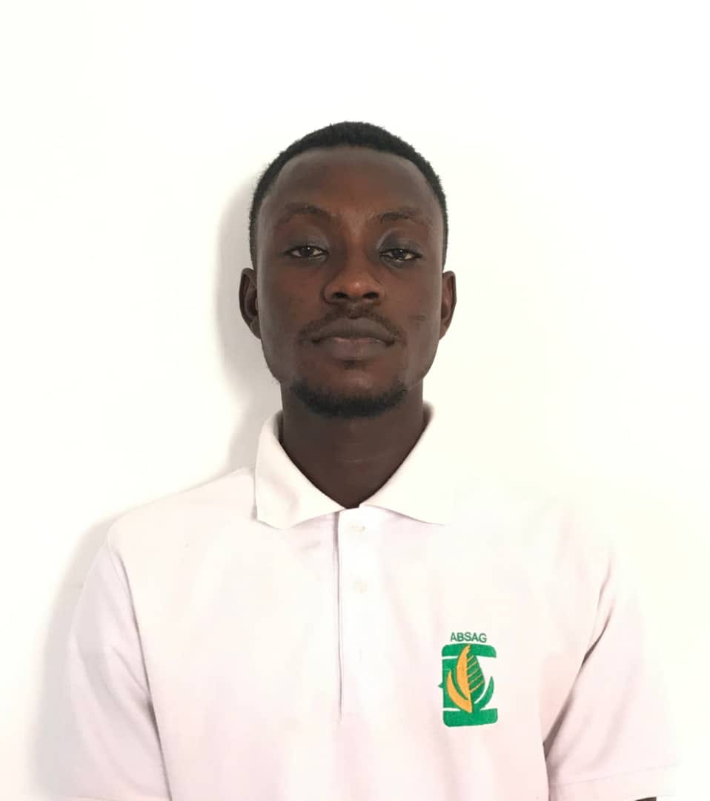

Welcome to my personal webpage! Here you can learn more about me, my interests, and how to get in touch. Feel free to explore the different sections and reach out if you have any questions or would like to connect.
I am Raymond Kwame Amachor. I am a student at BYU-Idaho through the BYU Pathway program. I am excited to be part of this learning community. I have a passion for learning and I am committed to doing my best.